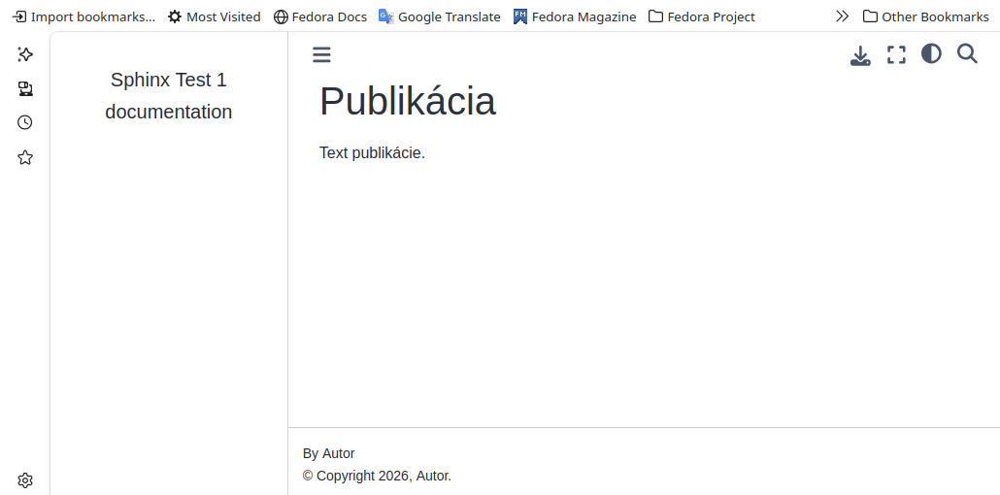

Konfigurácia #
V prostredí Sphinx môžeme vygenerovať predlohu, ktorá obsahuje základné prvky budúcej publikácie. Samotnú publikáciu potom vytvárame postupných rozširovaním a modifikovaním vytvorenej predlohy. Vytvorenie predlohy novej publikácie bude pozostávať z nasledujúcich krokov:
vygenerovanie predlohy publikácie pre prostredie Sphinx
konfigurácia prostredia a doplnenie rozšírení
Ak budeme publikáciu vytvárať pomocou textov formátovaných v Markdown:
upravíme vygenerovanú predlohu
podľa potreby aktivujeme doplnkové rozšírenia pre Markdown
Vytvorenie predlohy #
Pre novú publikáciu vytvoríme zdrojový adresár, v ktorom budú uložené všetky dokumenty, konfigurácie a skripty. Počiatočnú štruktúru publikácie ako aj konfiguračný súbor s predvolenými konfiguračnými hodnotami vytvoríme spustením skriptu v zdrojovom adresári publikácie:
sphinx-quickstart
Skript vytvorí základnú štruktúru publikácie prednastavenej pre tvorbu vo formáte reStructuredText. V zdrojovom adresári sa nachádzajú súbory
conf.py - konfiguračný súbor pre nastavenie vzhľadu, doplnkov a rozšírení
Makefile - skript pre konvertor textov
index.rst - hlavný súbor v hierarchii vytváraného dokumentu
make.bat - povelový súbor pre konvertovanie dokumentu vo Windows
Test predlohy
Vygenerovanú predlohu publikácie otestujeme skonvertovaním na html dokument príkazom sphinx-build spustenín v zdrojovom adresári
sphinx-build -M html ./ ./build --fail-on-warning
Vygenerovaný dokument index.html je v adresári ./build/html/
Úprava prostredia pre Markdown #
Vytváranie dokumentov vo formáte Markdown umožňuje preprocesor myst-parser, ktorý konvertuje príkazy z Markdown do formátu reStructuredText. Pre použitie formátu Markdown upravíme vygenerovanú konfiguráciu dokumentácie nasledujúcimi krokmi
zmažeme súbor index.rst
vytvoríme nový súbor index.md, tento súbor bude po konverzii titulným súborom publikácie. Do súboru uložíme text, napríklad:
# Publikácia Text publikácie.
do súboru config.py doplníme do zoznamu extensions rozšírenia z inštalácie pre Sphinx
extensions = [ "myst_nb", "sphinx_design", "sphinx_copybutton", "sphinx_togglebutton", "sphinx_subfigure", "sphinxcontrib.tikz" ]vyberieme grafickú tému budúcej publikácie a nakonfigurujeme ju pomocou konfiguračných premenných v súbore conf.py. Ďalšie témy grafického rozhrania sú dostupné na internete. Niektoré témy umožňujú použitie loga na vygenerovanej stránke, základné nastavenie je pomocou premnených
# --- Vyber z inštalovanych tem, odkomentujte vybranu temu # html_theme = "alabaster" # html_theme = "sphinx_rtd_theme" # html_theme = "pydata-sphinx-theme" # html_theme = "furo" html_theme = 'sphinx_book_theme' html_logo = "my_logo.png" html_static_path = ['_static']
Podľa potreby doplníme do súboru conf.py rozšírenia pre formátovanie textov v modifikácii Markdownu MyST, dostupné sú zabudované rozšírenia:
smartquotes - zjednodušené zadávanie typografických značiek
strikethrough - prečiarknutý text
dollarmath - zjednodušené zadávanie matematických textov pomocou $…$ alebo $$…$$
amsmath - doplnenie prostredia asmmath pre LaTex
colon_fence - alternatívne použitie :::
substitution - možnosť definovania substitučných reťazcov pri opakovanom zadávaní rovnakého textu
Všetky zabudované rozšírenia sa aktivujú v súbore conf.py zoznamom:
myst_enable_extensions = [ "amsmath", "attrs_inline", "colon_fence", "deflist", "dollarmath", "fieldlist", "html_admonition", "html_image", "linkify", "replacements", "smartquotes", "strikethrough", "substitution", "tasklist", ]
Konfigurácia pre túto publikáciu je v adresármi so zdrojovými kódmmi v súbore conf.py.
Vytvorenie publikácie #
Z vytvorenej konfigurácie vygenerujeme publikáciu z príkazom konzoly v pracovnom adresári
make html
Po úspešnej kompilácii sa v adresári _build bude nachádzať podadresár html so súborom index.html ktorý otvorime v štandardnom www prehliadači.
{kind=link}

Obr. 3 Vytvorená predloha publikácie.#